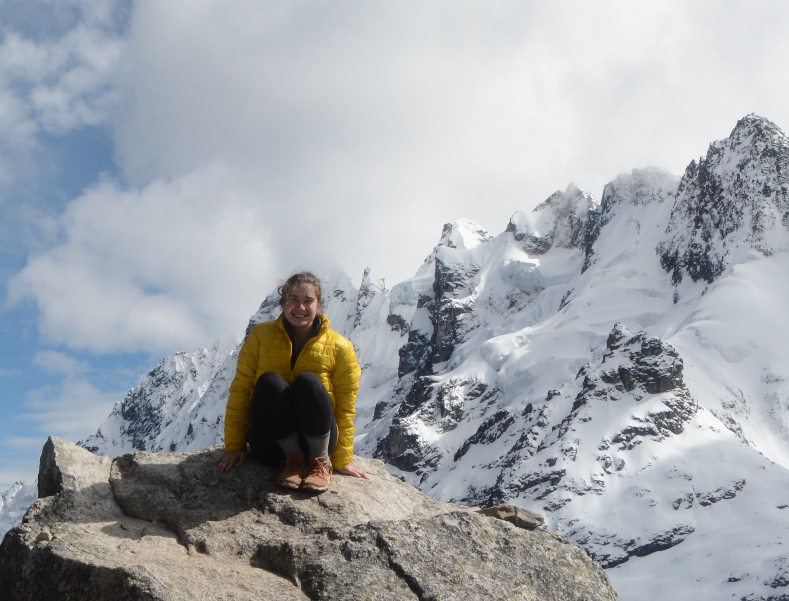

Hi! I'm Sabine and this is my website! Most of this website is temporary and will be updated soon!
I will be graduating from the University of Pennsylvania in December 2020 with a degree in Earth Science and concentration in Environmental Science. I am interested in studying large scale environmental change and how it relates to human wellbeing, especially using remote sensing.
Throughout my undergraduate career, I have spent two summers in Moab, Utah as a biological field technician for the United States Geological Survey, conducted a remote sensing analysis of land cover change in Madre de Dios, Peru, worked on an an independent research project with the USDA Forest Service using GIS to study tree cover change in Philadelphia parkland, and participated in two terms of the NASA DEVELOP program using Earth observations to study drought detection in Kenya , and urban development in Huntsville, AL.